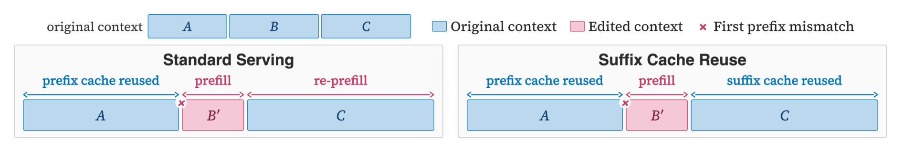
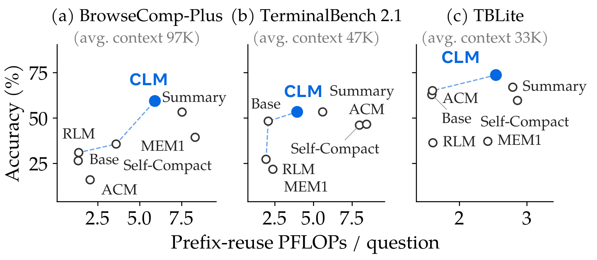
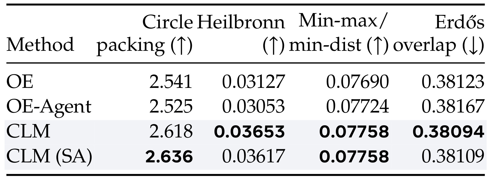
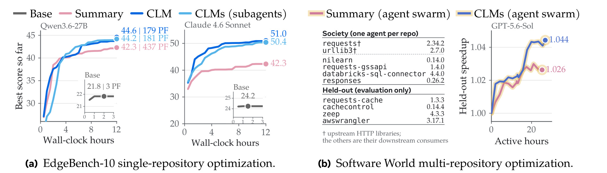
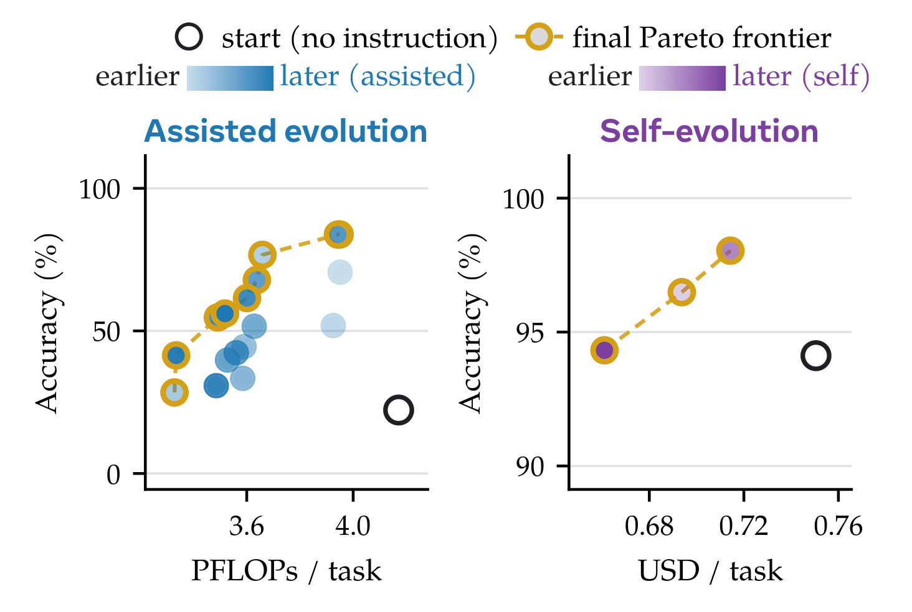
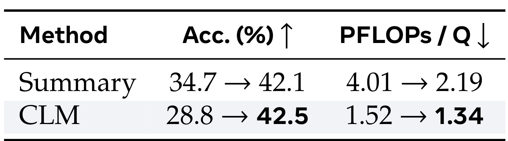
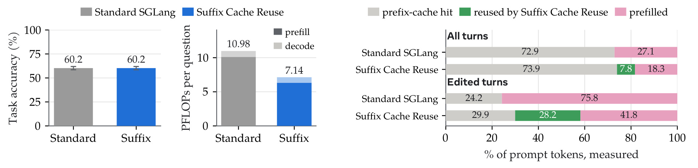

Context Language Models：把实时上下文变成模型可编辑的文件
本文由 Rulin Shao、Shannon Zejiang Shen、Junjie Oscar Yin、Yuetai Li、Minheng Wang、Hamish Ivison、Radha Poovendran、Nathan Lambert、Teng Xiao、Mike Lewis、Wen-tau Yih、Luke Zettlemoyer 和 Pang Wei Koh 完成。第一作者主要机构为华盛顿大学，合作机构包括 Meta Superintelligence Labs、MIT 和 Trillium Labs。
论文入口为 Context Language Models，arXiv v1 发布于 2026-09-29 14:50:08 UTC，PDF 首页署期为 2026-09-30。本笔记于 2026-09-30 核对 v1 全文 27 页及附录 A–G。官方代码已核验可访问，并含 CLM 与后缀缓存复用相关目录；本轮未复现训练。
上下文决定语言模型如何持续处理和保留信息，但上下文管理通常仍由外部程序控制，并不是模型自身的原生能力。
1. 背景和问题
论文引言提出的直接问题是：模型持续工作所依赖的上下文管理，主要由外部框架承担。智能体在连续执行任务时，会不断积累检索结果、终端输出、失败尝试、用户约束与中间结论。它们并非都具有相同的未来价值：有的字符串必须逐字保留，有的状态只需要最新版本，有的巨大资料可以存到磁盘，有的失败证据应压缩为一条避免重复探索的记录。固定长度窗口对这些信息实施同一种处理，容易把无价值的历史保存太久，同时在强制压缩时丢掉真正决定后续行动的细节。
常规语言模型的交互状态基本是只追加的。模型生成新文本，运行框架把工具返回和新消息接在原记录之后，直到接近窗口上限。工程系统通常会在某个阈值触发摘要，或者保留最近若干轮对话。这样做的优点是行为容易统一，缺点是何时压缩、压缩哪些部分、什么格式的状态可以保留，主要由外部代码预先决定。即使摘要由模型写成，模型也未必能够选择修改旧记录的任意位置；它更多是在被安排的时机完成一项压缩任务。论文把这种限制视为上下文管理能力进一步提升的障碍，而不是单纯的窗口容量不足。
已有工作逐步扩大了模型的选择空间。有的方法允许模型判断何时压缩，有的方法暴露卸载、检索和分支工具，还有的方法允许选定片段进行隐藏或摘要。它们已经比完全固定的压缩策略更灵活，但可用动作仍由工具接口规定。CLM 的假设是，可以进一步把上下文本身当作模型负责维护的对象，让通用代码操作承担删除、重排、替换、压缩、备份和状态更新。模型不只学习在既有菜单中选择动作，还可以通过写函数定义自己的操作组合。本文的“原生”首先是行为与接口意义上的原生，不意味着必须换一种神经网络层或从头预训练全新基础模型。
论文同时区分了实时上下文与外部记忆。外部记忆可以是磁盘文件、数据库或其他可检索存储；保存了信息不代表信息已经从下一轮模型输入中消失。一个智能体把大段日志写到文件，却继续带着原日志对话，仍然消耗同样的上下文空间。反过来，如果它只删掉日志却没有保存可检索位置，后面精确查询会失败。CLM 的特殊文件直接定义后续模型调用的输入，因此对它的编辑改变了当前工作状态；普通文件只在被读取时向上下文提供内容。这种角色区别比“都使用文件系统”更能解释方法的新意。
与 RLM 的关系也要在这个层面理解。RLM 把超长输入放在可编程环境中，模型按需读取片段，可以减少一次性进入窗口的材料；但已经读进来的材料和执行过程中产生的历史仍需管理。CLM 处理的是正在演化的交互状态，允许把已经进入窗口的内容再次移走或修改。两者并非相互排斥的完整系统替代关系，外部输入的按需访问与实时历史的编辑可以共同使用。因此，本文对某个 RLM 基线的胜出不能直接推出递归检索范式不再有价值。
为证明问题并不完全来自复杂推理能力，作者设计了 ContextBench。四个合成任务分别要求选择性逐字保留短句、维护随操作变化的数独面板、卸载并精确查询键值，以及卸载日志后进行查找和计数。数独任务不是让模型解数独，而是按用户给出的坐标修改一个格子，同时增加版本号并保持其他内容不变；键值查询的随机长字符串也无法靠语义摘要恢复。这样的设计主动去掉大量世界知识需求，让失败更直接指向保存、更新与检索行为。仅给出一段“总体上发生了什么”的自然语言总结，对这些任务显然不够。
任务流以用户消息逐批到达，操作内容先进入实时上下文，智能体随后才能处置。框架不能在入口悄悄替它截断或卸载；模型完成当前操作后，用准备信号请求下一批。评分检查上下文里的保留内容或答案，只保存在磁盘但未按要求取回的答案不算正确。窗口总量设为 32768 token，预留 2048 token 给回答，实际可用空间为 30720 token；生成器确保单次操作和必须保留的内容在预算内有余量。所以压力增大时的失败不能简单归咎于题目本身要求保存超出可用窗口的全部材料。
上下文压力定义为整个任务输入量相对窗口大小的比值。高压力表示经过了更多累计输入，并不表示某一时刻必须同时容纳全部输入。测试包含低于一倍的对照，也有最高二十四倍的条件。在这种环境下，只追加的模型最终会满；统一摘要可能改写必须逐字保存的短句；不会原位更新的方法会反复输出整张数独面板；只会卸载却无法及时清除实时内容的方法仍会被长值或日志挤满。这里得到的是上下文操作能力的诊断结果，而不是通用推理、真实用户满意度或生产环境安全性的综合评分。
最后，上下文自由编辑还引入了系统层面的反作用。删除中间消息可以缩短可见文本，却破坏标准推理服务的前缀缓存，让保留下来的后半段再次预填充。如果只数输入 token 或生成长度，就可能把一个更费计算的策略误判为更高效。本文因此把工作拆成三个相互关联的层次：以可编辑文件扩大行为空间，以技能演化和强化学习寻找更好的编辑策略，再以考虑缓存的成本指标和服务改造检验这些策略是否真正节省计算。三个层次分别有不同实验，不应把所有提升归结为“上下文更短”这一条原因。尤其需要区分诊断任务是否保留了精确状态、研究任务是否找对了答案、优化任务是否找到更好的程序，以及服务系统是否少做了重算；这些指标回答的是不同问题，某一项改善只能支持对应层面的判断。
2. 方法
2.1 从只追加记录到可编辑上下文文件
标准模型每轮生成文本并将其接到原上下文之后，论文用式一表示这一状态转移。这里讨论的是跨模型调用的状态构造规则，并不是把 Transformer 内部注意力改成某种可任意擦写的硬件寄存器。工具结果和对话记录最终仍要被序列化成下一次调用的输入，而这一输入由谁决定、能否修改已有片段，正是两种模型行为的分界：
符号解释：$c_t$ 是第 $t$ 轮的上下文，$\theta$ 是模型参数，$f^{\mathrm{LM}}_\theta$ 表示本轮生成过程，$\oplus$ 是序列拼接。CLM 改为让模型控制整个下一轮状态，而不仅是新附加的尾部：
符号解释：式二中的函数代表模型通过允许的运行环境实现的上下文变换；它可以包含原样保留、删除、重写、重排和追加。实现的关键是把实时上下文镜像到一个文件，并把文件路径告诉模型；模型用普通 Bash 或脚本修改它，框架把修改结果同步为下一次模型调用的输入。模型未修改文件时，新输出仍按常规追加，因此不需要每轮重写全部状态。输入是当前状态与任务，输出既可能是任务行动，也可能是改变未来输入的编辑操作；编辑后的状态影响后续行动，这才形成闭环。
在多智能体场景中，不同上下文文件分别连接不同模型执行流。建立或删除子智能体对应创建或删除相应文件，多个智能体可以共同维护项目状态。原文观察到的行为包括用原位编辑维护代理记分板、为内部笔记建立新角色、用循环清除无关搜索结果、定义压缩函数并反复调用。一个示例进行了 163 次原位修改，却把上下文保持在约六千至八千 token；另一个压缩辅助函数被调用 37 次。这些案例表明同一接口能表达多种操作，但只是已观察的轨迹，不是每次运行都会出现的必然行为。新角色如何映射到模型聊天模板，以及不同服务对消息结构的约束，仍属于实现层需要检查的细节。
2.2 技能演化与成功门控的强化学习
没有额外训练时，可以直接给 CLM 一份自然语言指令或技能文档，引导它在何时、何处以及如何修改上下文。式四把这份指导写成条件：
符号解释：$s$ 是技能文本，模型参数 $\theta$ 保持不变。技能可以指定压缩阈值，也可以描述保留精确值、写入外部文件后验证再清理等程序性步骤。单次推理中的技能遵循与跨任务挑选更好的技能是两个过程，前者执行已有指导，后者需要多个候选之间的评估。进一步的文本演化以任务分布上的轨迹奖励为目标：
符号解释：$x$ 为任务实例，$\mathcal D$ 为任务分布，$\tau(x;s)$ 为技能诱导出的完整轨迹，$R$ 为轨迹级奖励。实际流程是先在训练集采样轨迹，由提案模型分析成功和失败案例并写出候选技能，在开发集选择性能与成本的帕累托前沿，冻结档案后再测试。提案者可以比执行者更强，也可以就是执行模型自身。输出是一份以后可复用的技能文本，而不是一个改动后的服务程序；它改变的是输入中的程序性指导。
参数训练则使用逐步 GRPO。因为模型可能删除之前的上下文，最终记录并不包含所有早期行动生成时看到的输入，所以训练必须保存每个调用的原始上下文与输出片段。完整轨迹的任务优势分配给其中各段，策略损失在各自真实输入下计算，而不是把最终改写后的文本拿来冒充原轨迹。只有终局正确性奖励时，模型很难分辨某次编辑是否节省计算；直接奖励删除量又可能鼓励丢信息、频繁编辑或破坏缓存。作者因此只在成功轨迹内部增加效率信号：
符号解释：$\mathcal G_g^+$ 是同组中成功轨迹的集合，$c_i$ 是轨迹的前缀复用 FLOPs，$\bar c_g$ 是成功样本的平均成本。成功样本少于两个时全组效率优势设为零。该规则让更便宜的成功轨迹获得正信号，更贵的成功轨迹获得负信号，失败轨迹不会仅因为提前停止而拿到效率奖励。总优势写为：
符号解释：$A_i^{\mathrm{out}}$ 是任务结果优势，$w_{\mathrm{eff}}$ 控制效率项强度；实验取 0.25，并把效率信号用于上下文管理 token，另设工具调用失败和输出格式惩罚。训练后的推理不再需要逐题运行技能提案循环，也不需要计算训练奖励，只由学到的策略做任务与编辑决策。成功门控的限制是早期成功样本很少时无法提供有效成本比较，因此它仍依赖模型有一定任务能力和足够多的轨迹采样。
2.3 后缀缓存复用与计算口径
上下文修改的成本不能由“删掉多少字”直接判断。论文首先在标准服务假设下统计未命中前缀之后的预填充和新输出解码，式三为：
符号解释：预填充项对应首次失配之后需要重新计算的输入，解码项对应本轮新生成内容。未匹配后缀并不只包括实际改写的短片段，位于其后的完整消息也可能被重新处理。因此相同最终长度的两种编辑策略，可以因改动位置不同而产生很不一样的开销。附录将单轮成本展开为式九，以把长度和可复用位置同时纳入比较：
符号解释：$P_t$ 是本轮输入长度，$R_t$ 是可复用前缀长度，$U_t$ 是需要预填充的长度，$G_t$ 是输出长度。$C_{\mathrm{token}}$ 计入每个处理 token 的 MLP 与投影计算，$C_{\mathrm{attn}}$ 是全注意力每个查询键配对的成本，整条轨迹对各轮 $F_t$ 求和。本文的架构常数包含全注意力与线性注意力投影，忽略嵌入、输出层、循环状态更新和若干低阶算子，因而是明确约定下的计算量估计。附录用同为两万输入、五百输出的示例说明：可复用前缀从一万八千变为零，单轮成本由约 $1.41\times10^{14}$ 增至 $10.81\times10^{14}$。这些是示意计算，不能读作实测端到端延迟。

Figure 4 把旧上下文分为三个连续片段，编辑只把中间片段替换成较短的新版本。左半图的标准服务只能安全复用第一个片段；中间替换处出现首个失配后，即使最后一段文字完全没变，也必须重新预填充。右半图的 SCR 把仍然存在的最后一段缓存搬到新位置，仅处理新增文本。这个区别说明“保留文本未变”与“其内部注意力状态未变”并不相同：最后一段原本看过旧的中间内容，搬用它的状态就保留了这种历史影响。SCR 因此是近似复用，不是与重算严格等价的缓存优化；删除文本也不意味着相应信息已从隐藏状态中彻底消失。图中的较少预填充提供了效率动机，但不能凭结构图证明所有任务都不会降质。
具体实现保持 SGLang 原有前缀树不变，对当前提示与上轮提示做差分，寻找编辑后存活的片段，再按长度优先搬移最多六段。全注意力层复用键和值，并把键的旋转位置编码调整到新位置；搬移内容存放在会话私有缓存中，避免污染共享前缀树，分配失败则退回常规重算。混合模型的线性注意力没有逐 token 缓存可搬，作者保留编辑前的循环状态继续执行，让编辑主要通过十六个全注意力层反映出来。这意味着新插入内容在相应线性层并未按完整新历史重算，近似比单纯改位置更深。限制搬移段数是控制一次编辑引入的误差量，而不是数学保证误差为零。对原图两种路径的正确理解，应同时保留“少做计算”和“使用旧状态”这两个条件。
3. 实验结果
3.1 零样本深度研究与代码任务
主要零样本对比共用 Qwen3.6-27B 与基础智能体框架，考察 CLM、摘要、MEM1、Self-Compact、ACM、RLM 等方法。BrowseComp-Plus 使用固定语料的全部 830 个问题；检索返回十条片段，文档读取上限为 8192 token，未回答也算错误。代码任务由容器状态的验证器评分，终止时仍检查最终代码，而不是仅相信模型最后一句“完成”。这种共同基础有助于减少不同训练数据带来的混淆，但各方法使用的压缩触发和动作空间本来就不同，实验测的是完整运行策略而非单个函数。

Figure 5 的纵轴是准确率，横轴是每题前缀复用计算量，蓝色虚线连接性能与成本的帕累托前沿。三个面板显示的价值并不一样：在深度研究中，CLM 同时提高正确率并降低成本；在 TerminalBench 中，主要收益是保持较强准确率时减少计算；在 TBLite 中，则同时有一定准确率优势和较小成本优势。正文给出的 BrowseComp-Plus 准确率为 59.4%，相对最强摘要基线提升 11.4%，前缀复用计算量少 21.5%；这里的 11.4% 是相对增幅，不能直接写成增加 11.4 个百分点。TBLite 是 73.7% 对 67.0%，增加 6.7 个百分点，并使用约 91% 的基线 FLOPs。TerminalBench 与最强摘要方法准确率相当，计算量约为其七成。
图顶还标注平均上下文约为 97K、47K 和 33K，这些数字不能直接当作每轮允许使用的窗口上限，也不能擅自解释成累计 token。图注没有充分解释该标注与主预算之间的对应关系，因此本笔记不据此计算效率；具体运行限制以附录配置为准。正文图注用 32K 和百轮进行概括，附录则给出更具体的任务配置：TerminalBench 是 64 轮，BrowseComp-Plus 的调用预算是 23560 token、最多一百个非编辑轮次，CLM 编辑轮次不计入该上限，越界时允许回滚重试。因此复现应按附录逐任务实现，并同时记录模型调用次数、编辑次数和失败重试，不能仅使用一条“所有方法一百轮”的说明。该差异不会自动推翻图的观察，但它会影响成本与操作机会的公平性解释。
ContextBench 的诊断进一步帮助解释这些结果，却不是同一批任务的消融。四项任务使用 GPT-5.4，窗口约三万二千 token，按不同累计压力运行四个种子，部分压力点用八个种子。方法都得到关于自身工具的技能说明，意图隔离不会用工具的影响；但这些定制技能也是评测条件的一部分。CLM 的强项与动作自由度一致：逐字保留、局部更新和卸载后的及时清理都可直接表达。附录的小模型比较则显示能力门槛：Qwen3.5-9B 在终端任务平均仅编辑 1.4 次，约一半任务完全不编辑；较大模型平均 2.6 次，峰值上下文中位数也更低。由此更合理的结论是策略空间要配合模型能力，不能假设仅开放写权限就对所有模型产生等量提升。
3.2 数学优化与长时程软件任务

Table 1 比较四类开放数学优化：圆打包、Heilbronn 三角形、最小最大距离比，以及 Erdős 最小重叠。前三列越大越好，最后一列越小越好；直接横向比较数值大小没有意义。所有方法使用 Claude 4.6 Sonnet、相同评估器、三万二千上下文预算，并在一百次评分尝试或五小时处停止。普通 CLM 的圆打包得分为 2.618，对照 OpenEvolve 的 2.541，约提升 3%；Heilbronn 为 0.03653 对 0.03127，约提升 16.8%。这些是各自目标的相对改善，不是解题准确率。它说明一个通用智能体配合可编辑上下文和文本中的演化指导，可以在所测任务上达到甚至超过专门演化框架的最终最好结果。
子智能体并未带来一致增益。表中带子智能体的圆打包进一步达到 2.636，但 Heilbronn 变为 0.03617，弱于单智能体；距离比同为 0.07758，Erdős 重叠也略差于单智能体。多分支探索可能增加候选多样性，也可能消耗协调与上下文成本，因此不能从这一表推出“代理越多越好”。附录明确每种方法在每题只有一次运行，表中是本次最好结果，不是重复实验均值。进展曲线上的多个评分点属于同一轨迹，不是独立样本；接近的末位数差别缺乏稳健显著性证据。原文给出的原位记分板案例有助于理解模型如何保留已试路径，但案例与终值之间并不存在单独控制变量的因果验证。
从这张表还可以看出，比较对象的配置本身有研究含义。OpenEvolve 使用四个岛、六十个体的种群；代理增强版本允许提出候选前与环境交互；CLM 只保留简洁 Bash 接口，把演化规则作为上下文指导。因而优势可能来自规划、候选生成、历史整理和工具调用的共同变化。若要单独评估上下文编辑的贡献，应在相同候选生成与调度方案下开关编辑能力，并重复多种随机种子。这是进一步验证的建议，本文没有给出这样的完整分解，不能把观察到的所有目标改善都归因于某一种具体压缩动作。

Figure 6 左边是 EdgeBench-10，即从 48 个可运行公开任务中选出的十个任务，覆盖组合优化、机器学习、软件工程和游戏等领域。每任务三种种子，图按原文报告最好分数的演进，运行最长十二小时；成本标签是每次试验平均的前缀复用 PFLOPs，不能把最好分数与平均成本误说成同一统计量的均值。Qwen3.6-27B 单智能体 CLM 最终为 44.6 分、179 PFLOPs，摘要为 42.3 分、437 PFLOPs；由此得到约 5% 的相对分数提高和约 59% 的计算量下降。子智能体版本为 44.2 分、181 PFLOPs，基本没有额外收益。图中无上下文管理的基础方法很早停滞，其低成本不能脱离任务进展单独称为更有效率。
右边的 Software World 则是六个智能体分别优化六个相互依赖的 Python 仓库，以四个未见下游包中的十七项 CPU 基准评估泛化。基础模型与窗口也改变为 GPT-5.6-Sol、272K，运行超过二十四小时，并以累计 API 支出比较预算。最终几何平均加速比大约为 1.044 对 1.026；论文所说“改善幅度增加 65%”比较的是超过初始版本那一小段增益，不是最终程序运行时间直接降低 65%。图上数字经过舍入，不能用它们反推精确百分比。基准破坏时按 1.0 处理，也会影响几何平均，因此成功兼容性与速度提升必须一起看。这里的成本是金额，不能和左侧 FLOPs 直接拼成一条效率曲线。
窗口扩大后的补充实验提供了有用反例。在 128K 预算下，CLM 子智能体达到 50.2 分、219 PFLOPs，单智能体为 47.3 分、142 PFLOPs，摘要为 47.8 分、222 PFLOPs。多智能体这时有最高分，但不是最低成本；单智能体仍最节省，却略低于摘要分数。窗口、协作数量和策略能力存在交互，三万二千窗口下的排序并不恒定。真实部署若更在乎完成质量，可以选择前沿上的高分点；若受成本约束，则要比较同等预算的有效结果，不能把不同预算条件里的最大收益拼接成一个普遍承诺。
3.3 技能演化与强化学习

Figure 8 展示技能文本演化在 KV Store 任务上的性能成本关系。左图由更强提案模型给 Qwen3.6-27B 写技能，右图由同一个 Opus 5 兼任执行者和提案者；两图横轴分别是 FLOPs 与美元，纵轴范围也不同，所以视觉斜率不能直接比较。空心黑点是没有管理指导的起点，彩色点表示迭代候选，金色边框是最终前沿。图说明文字规则本身可以形成新的有效策略，不需要先改模型参数。例如，何时把整批值移出上下文、留下什么索引、查询时如何恢复精确值，这些顺序决策都可以在技能中表达，并通过轨迹反馈修正。
数值要严格分清开发与测试。附录的辅助演化开发集准确率从 22.3% 达到 83.8%，而保留测试集从 38.3% 达到 74.2%，即提升 35.9 个百分点；不能把开发终值当作独立测试效果。候选先在少量训练实例过滤，再经过开发集比较；最终冻结档案后只评一次测试。提案者读取多条成功与失败轨迹，生成完整重写方案，连续多轮不改善就停止。这样的分割减少直接针对测试调参，但进化搜索本身消耗额外推理资源；图中的单任务执行成本主要衡量技能应用阶段，不能自动证明搜索技能的总成本已经摊平。若任务分布经常变化，技能需频繁重演化，实际收益会取决于后续复用次数。
原文另有一句自然语言指令改变策略的实验：要求在不同长度压缩时，首次压缩中位数约为十六千、二十三点六千和三十点九千 token；要求在子问题边界压缩后，两轮内发生压缩的比例由约四成提高到约八成八；要求先备份后，完整备份约占六成八，另有部分备份。它们说明策略可被语言指导，却也说明指令遵循并不完美，尤其备份并未达到百分之百。把这些行为指标与技能搜索结果放在一起，比较完整的证据是模型能接受管理指令、能在特定诊断任务里改进指令、也仍有不执行指令的剩余失败。

Table 2 的两条箭头必须同时读。摘要框架从 34.7% 提高到 42.1%，计算量从每题 4.01 降至 2.19 PFLOPs；CLM 从 28.8% 提高到 42.5%，计算量从 1.52 降至 1.34。CLM 增加的是 13.7 个百分点，除以训练前的 28.8% 才得到约 47.6% 相对改善；计算量下降约 12%。训练后与摘要比较，准确率只高 0.4 个百分点，而成本约少 38.8%。论文更坚实的叙述是训练弥补小模型的管理能力不足，并在相近任务质量下保留显著计算优势，不能把零点四个百分点写成统计显著的大幅领先。
训练使用 3040 个 OpenResearcher 提示，每步八个提示、每提示三十二条轨迹，共七十步；采用低方差 KL 正则、截断重要性采样和去掉无奖励变化组的动态采样。策略与生成分别使用十六和四十八张 H200。检查点在五百道保留验证问题上选取，再评估全部 BrowseComp-Plus 问题。CLM 与摘要的训练运行限制和奖励配置并非完全同构：CLM 的效率信号作用于管理 token，摘要主对照以任务奖励训练，附录再给出加减效率奖励的曲线。曲线显示效率奖励有助于降低计算量而未见明确准确率损失，但仍需结合种子与误差范围判断，不能从单一最终点宣布绝无质量代价。
此外，Table 2 的未训练 9B 准确率是 28.8%，补充零样本评测中还出现 39.9%。这是不同实验段落和运行配置下的数字，不能在一条训练曲线上混用，更不能从 39.9% 算出本文宣称的训练增幅。主文训练结果与附录零样本结果都应保留各自口径。成功门控也不等于完全排除奖励投机：判断器仍可能出错，模型也可能针对可见任务奖励形成捷径。其确切保证是失败轨迹不会由于成本低而得到这项效率奖励，超出这个范围的可靠性需要独立评估。
3.4 服务端收益与近似代价

Figure 9 对比同一模型在 BrowseComp-Plus 上的两种服务方式：准确率均为 60.2%，每题 FLOPs 从 10.98 降到 7.14，约减少 35%。这里使用服务端实际预填充和复用情况进行统计，与前面零样本图的理论前缀复用成本不是可以直接混合的同一数据列。图右侧全部调用中，标准服务需预填充约 27.1% 的提示 token，SCR 降到约 18.3%；在发生编辑的调用中，预填充占比从约 75.8% 降到约 41.8%。这说明编辑轮的缓存破坏特别严重，也解释了为何一个看起来只是减少部分 token 重算的改造，能显著改变整体计算量。百分比的分母是各自调用组的提示 token，不能把两个调用组的比例直接相加。
附录进一步拆开收益来源：全部提示 token 中约 7.8 个百分点被 SCR 额外复用，其中约 5.3 个百分点来自聊天模板去掉此前推理内容，约 2.5 个百分点来自其他上下文编辑。也就是说，大部分附加复用不一定依赖智能体主动改写上下文，标准推理聊天服务也可能受益。删除历史推理会使后续保留文本失去连续前缀，SCR 正好复用这部分旧状态。本文对 CLM 行为的贡献和缓存机制的贡献因此可以组合，但不能把整个 35% 都解释为模型学会了更好的主动编辑策略。
效率结果仍有范围边界。搬移片段数敏感性只在六十四个问题上比较一、二、三、六、十二和六十四等取值，观察到任务性能较稳、复用收益到六段附近趋于饱和；这支持作者选用六段的实践选择，不构成最坏情况错误界。混合模型的循环状态检查点只存在于部分请求边界，还可能使未变化的前缀重新计算，因此仍有优化空间。更加细粒度的检查点会改变缓存命中和内存开销，最终效果取决于实现。全局准确率恰好相同也不代表两种服务逐题答案一致、隐私删除语义一致或长尾风险一致。服务实验没有直接报告真实用户端到端延迟和并发吞吐，不能把计算量减少等价改写成响应时间减少。
4. 总结
CLM 最有价值的结论，是把“模型读到什么”从外部框架的一组固定规则，转成模型可以学习和调整的行为。可编辑上下文文件让局部状态更新、精确信息保留、内容卸载与多智能体管理使用同一通用操作接口；技能演化展示了不改权重的优化路径，成功门控强化学习则把正确性和计算成本一起纳入训练。标准缓存成本的计量又提醒读者：删文本本身不等于省计算。论文真正形成的技术链条，是动作空间、学习目标和服务代价三者对齐，而不是某个孤立的摘要提示词。
实际使用时，应首先明确任务需要保留的证据种类。研究任务里，出处、文档编号和未验证假设不应混成一段不带来源的结论；代码任务里，已失败的方案、当前测试结果和待执行动作需要保持可区分；跨仓库任务还要追踪接口变化对下游的影响。CLM 提供了表达这些状态的自由，但没有自动证明所写状态正确。可编辑工作记录值得与不可变原始轨迹并存，使后续能够回查编辑前看到的证据。这是基于论文机制的工程判断，原文并未对这套审计方案提供效果实验。
需要保留至少四项限制。第一，数学优化每方法每题单次运行，长时程分数还有最好种子的统计选择，不能把所有差异解释为稳定期望收益。第二，开放编辑自由度依赖模型能力，小模型不编辑或编辑失当时收益有限；强化学习效果不能保证对所有基础模型迁移。第三，SCR 保留旧后缀及循环状态，是可能携带被删信息的近似方案，任务准确率相当不能证明语义等价。第四，计算量、金额、延迟和吞吐是不同指标，论文在不同任务采用不同成本定义，部署价值需要重新测量。第五，恶意指令或自生指令可以通过改写后的上下文持续存在，完整授权记录和系统约束不能轻易交给同一个可擦写区域维护。
还应警惕两种常见误读。一是把多智能体视为稳定增强器，实际上在三万二千窗口的单仓库和部分数学任务里没有额外收益；二是把文本演化的最终单任务成本当作包含技能搜索的一切成本，忽略前期提案和评估消耗。较可信的落地方式是先固定任务集，记录成功率、编辑次数、回滚次数、前缀复用率和总执行时间，再按任务生命周期比较成本。训练与服务改造应分别做开关对照，防止把模型策略改进和缓存近似收益混算。
后续最值得跟进的有三条路径：其一，在多种任务和随机种子上做相同调度、相同工具机会的编辑能力消融，确认自由动作空间带来的独立价值；其二，对 SCR 专门测量长序列、多段编辑与敏感内容删除后的行为，观察旧状态在何时产生有害残留，并比较重算纠偏的代价；其三，把可验证的管理不变量纳入技能和训练，如出处不可丢失、用户约束不可被摘要覆盖、备份完成才能改写。附录关于长度感知的结果也值得延伸：模型会在长上下文估计中落入固定数值桶，较近的长度提示明显有帮助。让模型知道预算消耗、知道编辑是否生效，比笼统要求“记住重要信息”更容易建立可靠反馈。
对推荐与检索工程的启发应停留在可检验假设层面：长期运行的分析或调参智能体可能受益于显式状态维护，但本文没有线上推荐点击率、转化率或排序收益实验。将 CLM 用于这类工作流时，应先验证证据保留和任务完成质量，再讨论成本节省。研究论文展示了一条有实证支持的上下文管理路线，也留下了模型能力、缓存近似和运行安全三方面的边界，不能仅依据摘要百分比直接推导生产系统收益。